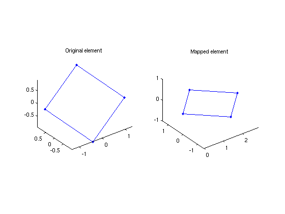

mapElemto2D
| main | Tutorials | Functions | website |
Projects triangles and quadrilaterals defined in the 3D space to the 2D space while preserving the area and length sides of the original shape. This is used internally during assembly of the fluxes.
Version : 1.0
Author : George Kourakos
email: giorgk@gmail.com
web : http://groundwater.ucdavis.edu/msim
Date 26-Mar-2014
Department of Land Air and Water
University of California Davis
Contents
Usage
[pxt pyt pzt]=mapElemto2D(px, py, pz)
Input:
px, py, pz: The coordinates of the elements. In case of triangles each argument is a [Nel x3] matrix and in case of quadrilateral [Nel x 4].
Output
pxt, pyt, pzt: Projected coordinates of the elements
Example
Consider the folowing quadrilateral in 3D space
px = [1.31128 0.39459 -1.31128 -0.39459]; py = [-0.52961 0.9889 0.52961 -0.9889]; pz = [0.006777 0.9308 -0.006777 -0.9308];
Lets say that a known flux is assigne to this element in the normal direction. To compute the actual flow rate we need to do the intergration over the actual area of the element. In mSim we map the elements from the 3D space to 2D space.
[pxt pyt pzt]=mapElemto2D(px,py,pz);
subplot(1,2,1); plot3(px([1 2 3 4 1]), py([1 2 3 4 1]), pz([1 2 3 4 1]), '.-') subplot(1,2,1);title('Original element') subplot(1,2,1); axis equal subplot(1,2,2); plot3(pxt([1 2 3 4 1]), pyt([1 2 3 4 1]), pzt([1 2 3 4 1]),'.-') subplot(1,2,2);title('Mapped element') subplot(1,2,2); axis equal
The plots can be decieving, because the transformed element has been rotated so as the diagonal of the element lies along the x axis. Lets compute the distances between the nodes of the original and the transformed element.
pdist([px' py' pz']) pdist([pxt' pyt' pzt'])
ans =
2.0000 2.8284 2.0000 2.0000 2.8284 2.0000
ans =
2.0000 2.8284 2.0000 2.0000 2.8284 2.0000
The area correct area where the flux should be applied is
polyarea(pxt',pyt')
ans =
4.0000